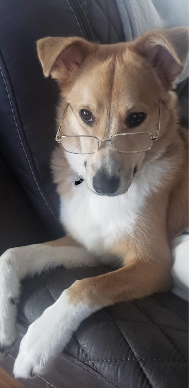
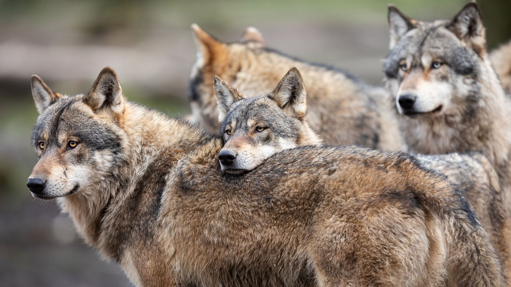

هذا المقال ردّ على مقال حمزة العقاد "الكلاب في الغرب"، اقرأه هنا.
كلب صغير بشنطة، كلب بوكل إذن خنزير، كلب نايم بتخت صحابه، وكلب عنده 5 مليون متابع... عن جد إحنا مدلّعين مخلوق بيتركنا عشان نص لقمة من بواقي الأكل؟ مقال حمزة عن الكلاب في الغرب فيه نقاط منيحة، بس بصراحة بحس إنه الدكتورة ميلفي كانت رح تنبسط كثير على حقده. الموضوع مش موضوع حب غير مشروط بقدر ما هو موضوع وفاء. "كما تدين تُدان" مقولة منيحة عن العدل، بس مش دقيقة كثير كقاعدة لحالها؛ بالزبط، ما بتسمعها إلا لما حدا يعمل إشي عاطل. إذا عملت إشي منيح لبني آدم، الأغلب رح تسمع: "بتعطيه إصبع، بياكل إيدك كلها".
بس مش مع الكلاب
وفاء الكلب هو أحسن مثال على "كما تدين تُدان"، من الطرفين. بتهمله، بيعصّي عليك. بتعامله بعنف، بيعاملك بشراسة. ما بتوثق فيه، بيتلاعب فيك. بس إذا عطيته تدريب وحب وأكل، بتاخذ جنتلمان وفي، مربّى، ومحترم (الصورة تحت).

أما بالنسبة للكلاب الشاردة، القاعدة نفسها بتنطبق، هم انعكاس لطريقة تعامل البشر مع الكائنات اللي حواليهم. الجيل الأول من الكلاب الشاردة، يعني الكلاب اللي انتركت، هم ببساطة نتيجة اللي بصير لما تتبنى/تشتري مخلوق وبعدين تقرر تتركه عشان عيب صغير. واللي غالباً بيكون نتيجة إهمال. الجيل الثاني وما بعده، هم النسخة المتطورة من هاد الإهمال البشري. شو متوقع لما تشتري كلب أوخذ من عيلته وانباع بكيس بلاستيك؟
العيب الأخلاقي عند الكلاب
الكلاب مش هالمخلوق الهبيلة اللي بينضحك عليه برمية زي ما بنفكر. هي بالأصل كانت حيوان بري قرر ينضم لعدوّه. هالحيوان البري كان يشارك أرضه مع جنس ماشي على رجلين وماسك رمح، وما كان لطيف أبداً. وبحركة ذكية بهزّة ذيل وعيون الجرو، تخلّوا عن رغبتهم إنهم يضلّوا بريّين وأحرار عشان يصاحبوا عدوهم. يمكن أكون مكبّر القصة شوي، بس بحب أتخيل إنه كان في ذئب قرر يدير ظهره لقطيعه، وترك حلمه إنه يصير من أقوى المفترسين، عشان يلحس رجلين الإنسان القاسي والطمّاع.

بالآخر، كانت مخاطرة بتستاهل الاحترام، شو لو إنه قرّب زيادة وأكل سهم بضلوعه؟ آسف على الصورة الدموية، يمكن كان لازم أختار مثال ألطف. المهم، هاي نصيحتي إلك يا حمزة: تبنّى بسة.
- رح تحب إنها ما بتحب حدا يدلّعها
- رح تساعدك بمشكلة الفيران اللي عندك
- إنتو الثنين حاقدين على نفس الفصيلة.
وتذكّر هالإشي، الحيوانات الأليفة رح تعطيك الوفاء اللي كان توني سوبرانو يحكي عنه، وفاء المافيا بالأجيال اللي قبله. وأخيراً، هيك رح تصير حياتك بعد كم شهر من ما تتبنى البسّة:
 ملاحظة: الكره بين البسس والكلاب أصلاً مجرد بناء اجتماعي، أنا بس كنت بحاول أقنعك.
ملاحظة: الكره بين البسس والكلاب أصلاً مجرد بناء اجتماعي، أنا بس كنت بحاول أقنعك.

اضغط على الصورة للعودة للصفحة الرئيسية